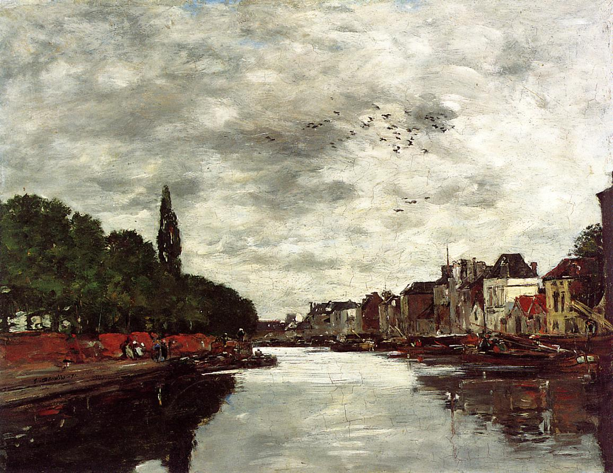
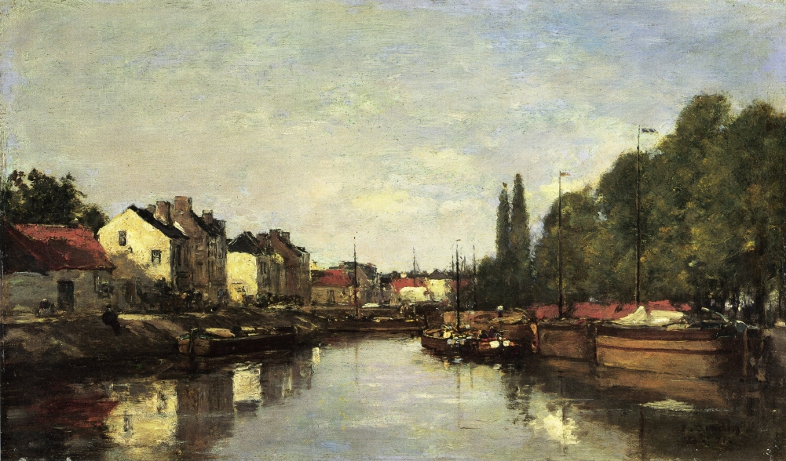
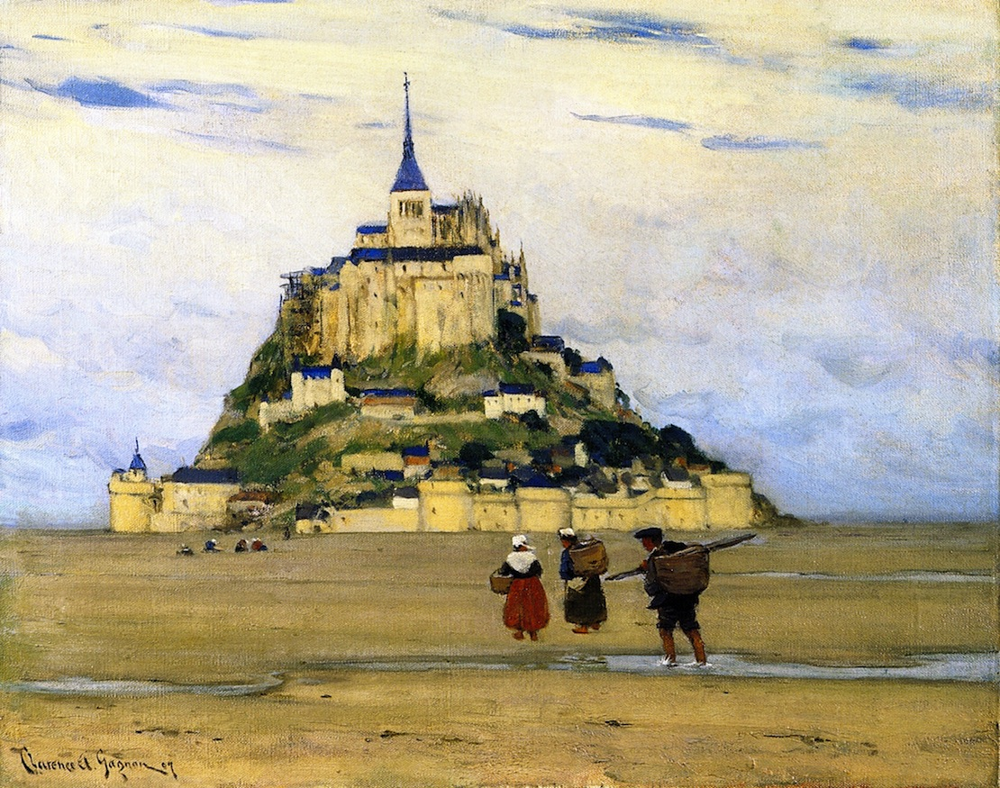
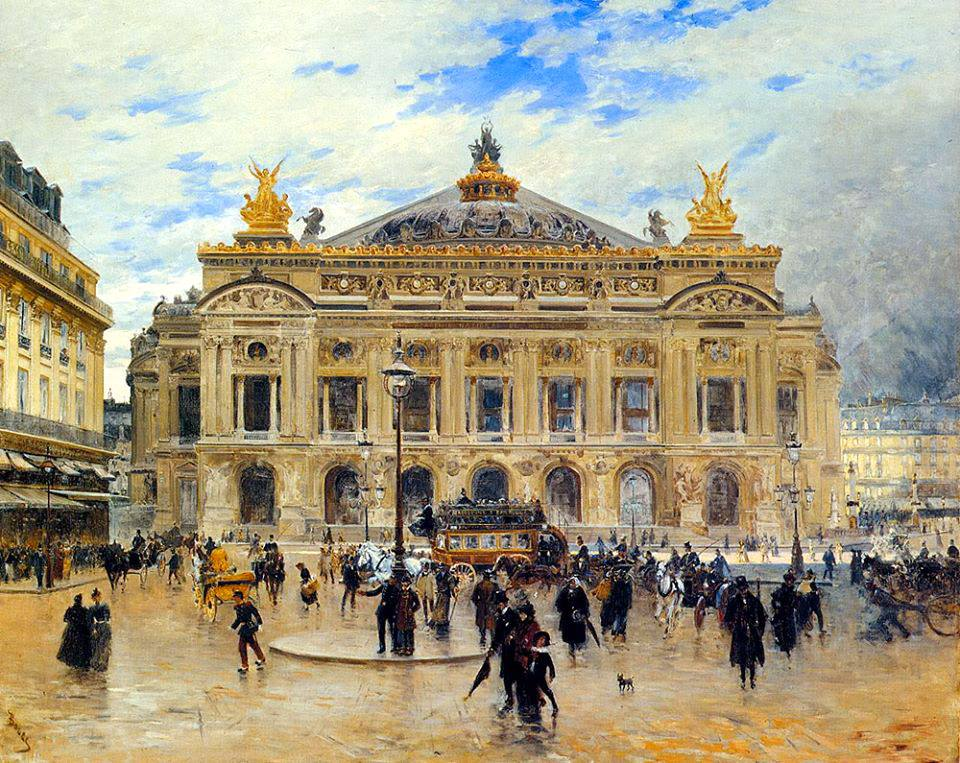
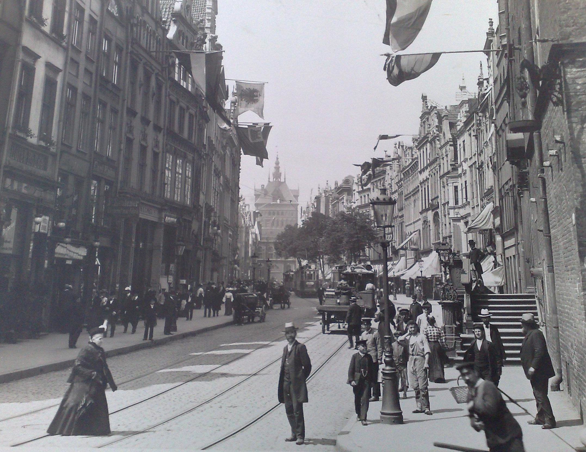

Krajobrazy Rilkego
Asyż
Po bolesnym rozstaniu z Magdą von Hattingberg w maju roku 1914, czując „bezgraniczną potrzebę samotności”, Rilke schronił się w Asyżu w Umbrii. Pocieszenia szukał w całkiem nieznanym sobie miejscu, które „podobne niezapisanej stronicy nie przywoła choćby najbłahszego wspomnienia”.
Maurice Prendergast „Assisi”, ok. 1898-1899
Awinion
Ostatnio przebywałem w Prowansji, w Awinionie, była to jedna z moich najciekawszych podróży. Niemal codziennie przez siedemnaście dni oglądałem olbrzymi pałac papieski, tę hermetycznie zamkniętą twierdzę, w której papiestwo, stojąc w obliczu upadku, próbowało się okopać, zapiekłe w swojej ostatniej wielkiej namiętności. Ilekroć się ogląda ów gmach, co był siedliskiem rozpaczy, wydaje się, że stoi on na skale nieprawdopodobieństwa…
— Rilke w liście do Lou Andreas-Salomé (przeł. W. Markowska)

Paul Signac „Le château des Papes, Avignon”, 1909
Belgia
Brugia była niezrównanie piękna… Nasza mała dziewczynka wszędzie z nami chodziła. W muzeach rozsiadała się na posadzce i bawiła muszelkami zebranymi nad brzegiem morza…
Eugene Boudin „Canal near Brussels”, 1871
W sierpniu 1906 roku Rilke podróżuje po Belgii. W Furnes przygląda się dorocznej procesji, którą opisze później w swym studium Furnes. Wraz z Klarą i Ruth udaje się do Ypres, a następnie spędza dziesięć dni nad morzem w Oostduinkerke. Rilke odwiedza też Brugię. Wrażenia z pobytu w tym mieście znajdą wielorakie odzwierciedlenie w dziele poety; niezapomnianym przeżyciem jest widok Ołtarza św. Jana pędzla Hansa Memlinga z wizerunkiem piszącego oburącz Jana na Patmos. W Gandawie Rilke, Klara i Ruth przyglądają się procesji maryjnej.
Eugene Boudin „Brussels, the Louvain Canal”
Biskra
Podróż Rilkego po Afryce Północnej trwała od 19 listopada roku 1910 do 29 marca roku następnego. Poeta zwiedził Algierię i Tunezję, następnie Egipt. Wypłynął statkiem z Marsylii i udał się najpierw do Algieru, gdzie spędził około tygodnia, po czym wraz z towarzyszami podróży podążył w głąb lądu do Biskry.
Dzielnica zamieszkana przez ludność tubylczą wyglądała dokładnie tak, jak w opisach z kart Księgi tysiąca i jednej nocy. „Żebracy i tragarze kręcą się wokół jakby wiedzeni przeznaczeniem, Allah jest wielki i powietrza nie przeszywa inna władza oprócz Jego”.
Uliczka w Biskrze, rok 1899, litografia ze zbiorów Library of Congress
Z balkonu swego pokoju w Biskrze Rilke mógł obserwować zatrzymujące się tam na noc karawany. „Miejscowość jest niewielka, lecz okolica przeogromna, pełna gajów palmowych i gór (…) Rynek, kawiarnie, gracze w domino przykucnięci na matach, dwie uliczki pełne tancerek, tu i ówdzie słychać dźwięki piszczałek”.
Targ w Biskrze, rok 1899, litografia ze zbiorów Library of Congress
Blask Atona
Amenofis IV (Amenhotep IV, Echnaton), władca starożytnego Egiptu z XVIII dynastii, syn Amenhotepa III i królowej Teje, mąż królowej Nefertiti, ojciec faraona Tutanchamona.
Reformator, próbował wprowadzić monoteizm, wiarę w jedynego boga Atona. Przeniósł stolicę z Teb do nowo wybudowanego miasta słońca Achetaton (horyzont Atona). Faraon przyjął też nowe imię Echnaton (blask Atona).

Łagodnym przemijaniem
pokwitająca twarz spoczywa
na czaszki płaszczyźnie dawnej, co winnicy
skłonem opada, cała obrócona
w stronę wszechświata, ku ognisku światła.
Rilke podziwiał rzeźbę głowy faraona w Muzeum Egipskim (Neues Museum) w Berlinie. Poświęcił jej także wiersz Głowa Amenofisa IV w Berlinie.
Fragment wiersza Głowa Amenofisa IV w Berlinie w przekładzie A. Pomorskiego
Capri
Codziennie stajesz mi stromo przed sercem,
góro, skało, urwista
pustko bez drogi: Boże, w którym się wspinam,
spadam samotny
i błądzę… i co dzień jak burza,
w moim wczoraj Przebytym znów się zanurzam
i krążę.
— Rilke w wierszu Improwizacje z capryjskiej zimy (przeł. B. Antochewicz)
Theodore Robinson „Capri”, 1890
Duino
Słońce dopiero co skryło się za horyzontem, spokojna tafla morza mieniła się głębokim lazurem. Zmierzch z wolna barwił wodę coraz ciemniejszym odcieniem. Wówczas poeta począł czytać nam obie elegie. A kiedy zapadła noc, usłyszeliśmy niezwykły wiersz, którego słowa pozwalają odczuć szum nawałnicy, tchnienie nocy i oddech nieskończoności, owo Pradawne tchnienie morza.
— Marie von Thurn und Taxis o pewnym niezapomnianym wieczorze w Duino

El Kantara
W grudniu roku 1910 w trakcie podróży po Afryce Północnej wziął Rilke udział w wycieczce do wąwozu El Kantara opodal Biskry, stanowiącego „imponujące wrota pustyni”.
Gorges d'El-Kantara, côté sud, Algérie, ancien imprimé 1900
Florencja
Długo zwiedzałem dzieła sztuki we Florencji. Godzinami mogłem przesiadywać przed jakimś obrazem, by wyrobić sobie o nim zdanie, porównując je potem z pięknymi ocenami Burckhardta. Kiedyś zapomniałem stojąc przed Magnificat Botticellego i mych własnych określeń, i obcych formułek. I wtedy to się stało. Czułem się, jakbym stoczył bój i odniósł zwycięstwo… I ogarnęła mnie nieznana dotąd radość.
— Rilke w Dzienniku florenckim, pisanym z myślą o Lou Andreas-Salomé (przeł. W. Markowska)

Frederick Childe Hassam „View of Florence from San Miniato”
Nie muszę mówić: Wybacz! Każdym bowiem swym milczeniem błagam Cię o to; i nie muszę prosić: Zapomnij! Oboje bowiem chcemy wspominać nawet te godziny, kiedym pragnął uciec od Ciebie ze wstydu; lecz nawet w tej mojej ślepej ucieczce zawsze biegłem naprzeciw Ciebie.
— Rilke na kartach Dziennika florenckiego (przeł. W. Markowska)

John Singer Sargent „Florence Fountain, Boboli Gardens”, 1906-1907
Kairouan
Zwiedzając w grudniu roku 1910 Kairouan, „drugi, obok Mekki, wielki cel pielgrzymek mahometan”, Rilke odczuł „prostotę i żywość tej religii. Prorok jest wielki, a miasto należy do niego niczym imperium, niczym wizja… Wokół niego jedynie równina i groby, jak gdyby oblężone przez swych umarłych”.

Wielki Meczet (Mosquée Okba Ibn Nafi), Kairouan, Tunezja
Karnak
Ten niewiarygodny świat świątyń Karnaku, na który pierwszego wieczoru i znów wczoraj, przy świetle księżyca tuż po pełni, patrzyłem, patrzyłem, patrzyłem… Tam stoi kolumna o głowicy w kształcie kielicha, samotnie, jedyna, która przetrwała, i nie można jej objąć, tak wznosi się poza kres życia…
O kolumnie tej wspomni poeta w Sonetach do Orfeusza:
Lub ta jedyna kolumna, kolumna w Karnaku,
co przeżyła niemal wieczne świątynie.
Ilustracja z książki „Zigzag journeys in the Levant”, Hezekiah Butterworth, 1885
Les Alyscamps
Was, o których nigdy nie zapomnę,
pozdrawiam, sarkofagi antyczne…
W Sonetach do Orfeusza (część pierwsza, sonet X) przywołuje Rilke wspomnienie grobów „na sławnym starym cmentarzu Alyscamps niedaleko Arles”, o którym mowa jest również w Pamiętnikach Malte Lauridsa Brigge.

Cimetière des Alyscamps, Arles, sceneria rozmyślań Maltego, uwieczniona na rysunku D. Lancelota z roku 1880
Paul Gauguin „Allee des Alyscamps”, 1888
Vincent van Gogh „Alyscamps”, 1888
Les Baux
Czy słyszałaś kiedyś o Les Baux? Idzie się od strony Saint-Remy, gdzie ziemia Prowansji tonie w kwiatach i naraz wszystko jakby kamienieje. Drogę zagradzają trzy góry, ukośnie na siebie zachodzące, rzec by można, trzy odskocznie, z których strącone trzy ostatnie Anioły spadały w straszliwym rozpędzie.
— Rilke w liście do Lou Andreas-Salomé (przeł. W. Markowska)
Claude Carvin „Les Baux de Provence”, 1956
Memfis
W roku 1911, w trakcie podróży po Egipcie, Rilke odwiedza gaj palmowy w pobliżu starożytnego Memfis. Leżał tam kolosalny posąg Ramzesa II, „jak tylko leżeć może świat, sam ze sobą, pod pełnią przestrzeni”.
Fotografia pochodzi ze zbiorów Travelers in the Middle East Archive, autorem zdjęcia jest H. W. Dunning, rok 1905.
Mira, dolina Brenty
Jakimże wzruszeniem przejmował go widok opustoszałych willi w dolinie Brenty, przede wszystkim tej jednej, o wysokich kolumnach, zwanej „La Malcontenta”, budowli zaiste odosobnionej i posępnej, którą pewien wenecki szlachcic polecił wznieść dla swej córki — skłonnego do melancholii dziewczęcia o imieniu Malcontenta. I znów mógł Rilke do woli snuć marzenia o tej pięknej, przygnębionej smutkiem patrycjuszce.
— Marie von Thurn und Taxis na kartach Wspomnienia o Rainerze Marii Rilkem
Villa Foscari, zwana La Malcontenta, renesansowa willa w miejscowości Mira w pobliżu Wenecji, zaprojektowana przez Palladia na zamówienie braci Foscari.
Mont Saint-Michel
Jeszcze tyle mam Ci do opowiedzenia z Paryża, musisz posłuchać jeszcze o Mont Saint-Michel i o gotyckim kościele Archanioła, który się wznosi na północnym wybrzeżu Normandii, niemal całkowicie oblany morzem, i o wielu, wielu innych rzeczach, które mnie zachwycały, chciałbym Ci jeszcze mówić i choć w cząstce móc Ci je przekazać.
— Rilke w liście do Lou Andreas-Salomé (przeł. W. Markowska)
Clarence Gagnon „Mont-Saint-Michel, Morning”, 1907
Ogrody Tuileries
Dzisiaj był piękny jesienny ranek. Szedłem przez Tuilerie. Wszystko, co było na wschód, pod słońce, raziło. Strona oświetlona była obwieszona mgłą jak jasnoszarą zasłoną. Szare w szarym wygrzewały się w słońcu posągi w nie odsłoniętych jeszcze ogrodach. Pojedyncze kwiaty wstawały w podłużnych klombach i mówiły: Rouge! głosem wystraszonym.
— Rilke na kartach Maltego (przeł. W. Hulewicz)
Camille Pissarro „Place du Carrousel, the Tuileries Gardens”, 1900, National Gallery of Art, Waszyngton
Ogród Luksemburski
A świat tak jest urządzony, że istnieją ludzie, którzy przez całe życie przechodzą tędy, kiedy on — bardziej bezszmerny od wszystkiego, co się porusza — dalej sunie jak wskazówka, jak wskazówki cień, jak czas.
— Rilke na kartach Maltego (przeł. W Hulewicz)
Vincent Van Gogh „Terrace in the Luxembourg Gardens”, 1886
Padwa
Samotnie odkrywam Padwę… i nie mogę wyjść ze zdumienia. Wczoraj freski Giotta, dziś ten wspaniały Prato della Valle. I wszelkie owe nieznane mi rzeczy, które coraz bardziej do mnie, podróżnego, przemawiają.
— Rilke w liście do księżnej Marie von Thurn und Taxis
Giotto di Bondone „Pocałunek Judasza”, ok. 1305, Padwa, Kaplica Scrovegnich
Paryż
Nieopisana pełnia, która temu miastu, z jego niewyczerpanym bogactwem zjawisk, pozwala tworzyć krajobrazy ducha pod najsłodszym niebem ziemi.
— Rilke w liście do Ellen Delp, 1925
Frank Myers Boggs „L'Opéra de Paris”
Pewnego razu (dosyć wcześnie rano) szedłem sobie w dół bulwarem St. Michel do Biblioteki Narodowej, gdziem zwykł spędzać sporo czasu. Szedłem tak i cieszyło mnie wszystko, co mógł przynieść mi ten poranek, początek nowego dnia, nawet w tym mieście niosący z sobą powiew świeżości, jasności i pogody. Z przyjemnością patrzyłem na czerwień kół u wozów, wilgotną i chłodną, lśniącą niczym na płatkach kwiatów, cieszyło mnie, że gdzieś na końcu ulicy ktoś mignął jasną zielenią — nie wiadomo dlaczego, ale było mi z tym dobrze.
— Rilke w liście do Lou Andreas-Salomé, przeł. W. Markowska

Camille Piton „The Invalides seen from Pont Alexandre III”, 1900
Bulwar St. Michel był pusty i przestronny i łatwo się szło po jego lekkiej pochyłości. Okna otwierały się w górze z brzękiem szklanym, a błysk ich leciał jak biały ptak przez ulicę. Powóz o jasnoczerwonych kołach przejechał, a dalej w dole ktoś niósł coś zielonego. Konie w błyszczącej uprzęży biegły przez ciemno spryskaną, czystą jezdnię. Wiatr był poruszony, nowy, łagodny, a wszystko wznosiło się: zapachy, wołania, dzwony.
— Rilke na kartach Maltego, przeł. W. Hulewicz
Camille Pissarro „The Garden of the Tuileries on a Spring Morning”, 1899
Teraz, w wielkiej ciszy, z dala od świata, Pańska piękna troska o życie porusza mnie jeszcze bardziej niż w Paryżu; tam wszystko brzmi inaczej i przebrzmiewa w nadmiernym hałasie, od którego drżą rzeczy.
Tu, gdzie otacza mnie potęga ziemi, nad którą przechodzą wiatry od mórz, tutaj czuję, że nikt nigdy nie zdoła Panu odpowiedzieć na owe pytania i uczucia wyrastające z głębin życia; bo nawet najlepsi błądzą w słowach, gdy mają one wyrazić coś najcichszego i ledwo wysławialnego.
— Rilke w Listach do młodego poety, przeł. J. Nowotniak

Henri Matisse „Notre Dame”, 1904
Myślę sobie, że Pan jesteś najszczęśliwszym człowiekiem na tej boskiej ziemi… Jesteś Pan wielkim poetą i Pan dobrze o tym wiesz. Jesteś Pan zakochany (nie rezonować, Pan jest i był zawsze zakochany, w kim, kiedy i gdzie, to wszystko jedno). Posiadasz małe atelier w Paryżu — i jest właśnie marzec — cała ta przecudowna wiosna puka do Pańskich drzwi…
— Marie von Thurn und Taxis w liście do Rilkego, przeł. W. Markowska
Praga
Pradawne zaczarowane miasto, gdzie miesza się w jedno tak wiele esencji, gdzie rodzą się czarodziejskie, niepojęte rzeczy, słowa, charaktery i zdarzenia… Tam też mają swe źródło magiczne moce i zaklęcia.
Nie, z mej pamięci nie uleciał
dzieciństwa dawny dom znajomy…
— pisze Rilke w wierszu z tomu Ofiary dla Larów.
Oskar Kokoschka „Widok Pragi”, 1934
Ronda
W trakcie swej podróży do Hiszpanii Rilke prawie dwa miesiące spędza w miasteczku Ronda, gdzie „w przedziwnym otoczeniu” powstają m.in. Trylogia hiszpańska oraz początkowe wersy Szóstej elegii duinejskiej.
Odbywam tu długie, dalekie wędrówki, niekiedy przez parę godzin słońce tak pali, że odpoczywam pod dębem korkowym… Wszystko, co było i co może mnie jeszcze spotkać, wydaje się w takich chwilach tak mało ważne
— pisze Rilke w liście do Lou Andreas-Salomé.
David Bomberg „Ronda”, 1935
David Bomberg „The Gorge, Ronda, Spain”, 1935
Albert Daniel Rutherston „Viaduct at Ronda, Spain”, 1913

David Bomberg „The Last Landscape (Tajo and Rocks, Ronda, Spain)”, 1956
Rouen
Paryż był tym razem dokładnie taki, jakem go sobie wyobrażał: ciężki, nie do zniesienia… Mój pokój jest pełen wspomnień minionego czerwca, jakby czekał grożąc, że wszystko, co się tu zaczęło, przeżywać będę na nowo, jak wówczas. Ze strachu pojechałem od razu w niedzielę do Rouen. Ogrom katedry mnie zagłuszył, ale tego mi było trzeba. Prowincja francuska ma zawsze w sobie coś uspokajającego…
— Rilke w liście do Lou Andreas-Salomé, przeł. W. Markowska
Joseph Mallord William Turner „Rouen Cathedral”, ok.1832
Rzym
Czy jeszcze coś pamiętasz z Rzymu, kochana Lou? Jakim pozostał w Twej pamięci? W mojej zostaną kiedyś tylko fontanny…
Nie zapomnę nigdy odlanego z brązu pomnika Marka Aurelego na Kapitolu, pięknej marmurowej rzeźby w Muzeum Ludovisi, jakiejś kolumny gdzieś w małym zapomnianym kościółku… i może widoku opustoszałej Kampanii, jakiejś samotnej drogi pod wieczór i wielu smutków, jakie tu przeżyłem.
— Rilke w liście do Lou Andreas-Salomé, przeł. W. Markowska

Giovanni Paolo Pannini „Ruínas de Roma Antiga”, 1725-1750
Toledo
To niezrównane miasto z mozołem dzierży w obrębie swych murów jałowy, niezmienny, nieujarzmiony krajobraz, górę, szczerą górę, górę wizji — przeogromna wznosi się z niego ziemia, by tuż u wrót jej bramnych stać się światem, stworzeniem, górą i wąwozem…
Aureliano de Beruete „Vista de Toledo desde los Cigarrales”
Nigdy nie zdołam wyrazić, jak wygląda to miejsce, droga Przyjaciółko (to język aniołów, co zagościli pośród ludzi), lecz musi mi Pani uwierzyć na słowo, iż ono istnieje, istnieje naprawdę. Nie sposób go opisać, napełnia je harmonia; teraz rozumiem legendę, mówiącą, iż Bóg, stworzywszy czwartego dnia Słońce, rozjaśnił nim niebo nad Toledo — tak gwieździsta aura spowija to niezwykłe miejsce, tchnące w dal, ku przestrzeni.
— Rilke w liście do księżnej Marie von Thurn und Taxis, rok 1912
Joaquín Sorolla „Covachuelas, Toledo”, 1906
Toskania
To przerażające: po innych krajach ludzie podróżują rozsądnie. Często pozwalają, aby kierował nimi przypadek, odkrywają piękne i zaskakujące rzeczy i mnóstwo radości w sposób obfity i dojrzały spada im prosto z nieba. We Włoszech zaś przebiegają ślepi obok tysięcy cichych piękności ku tym oficjalnym osobliwościom, które ich najczęściej tylko rozczarowują.
— Rilke na kartach Dziennika florenckiego, przeł. B. Antochewicz
Camille Corot „Les Denicheurs Toscans”, 1855-1865
Niejeden już raz ziemia italska mnie porywała i uwodziła na wyżyny, z których boleśnie spadałem, dlatego może to i dobrze, że teraz znajdzie się przy mnie ta młoda artystka, kobieta, która ani jako twórczyni, ani z żądzy życia nie tęskniła za tym południowym krajem, gdyż jej północna uczuciowość z nieufnością traktowała tę zbyt otwartą, iskrzącą blaskiem wspaniałość Południa…
— Rilke w liście do Lou Andreas-Salomé, przeł. W. Markowska

William Merritt Chase „Widok Fiesole”, 1907
Tunis
Rok 1910. Rilke podróżuje po Afryce Północnej. Zwiedziwszy Biskrę oraz wąwóz El Kantara, w połowie grudnia poeta dociera do Tunisu.
„Jest to kraj głębokiej i płomiennej wiary… to właśnie na tej ziemi wczesne chrześcijaństwo głęboko zapuściło swe korzenie — Kartagina i jej okolice to przecież ojczyzna św. Augustyna” — pisał Rilke w jednym z listów.
Walter T. Crane „Porte de France, Tunis”, 1910
Villa Pisani w Strà
Niedługi czas potem udałam się wraz z Rilkem do ukochanej przez nas Wenecji. Znów nastał piękny, pogodny dzień.
Po drodze zatrzymaliśmy się w Udine, by w tamtejszym pałacu arcybiskupim zobaczyć freski Tiepola… Następnie ruszyliśmy do Castelfranco, gdzie z rewerencją pozdrowiliśmy Madonnę Giorgione. Czas ostatniego dłuższego postoju poświęciliśmy na zwiedzanie ogrodów w Strà, gdzie w labiryncie zbłądziła ongiś Duse.
— Marie von Thurn und Taxis w swym Wspomnieniu o Rainerze Marii Rilkem

Przywołany przez księżną Taxis labirynt w ogrodach Villa Pisani w Strà, założony w latach 1720-1721; w jego centrum wznosi się wieżyczka, na której tarasie znajduje się posąg Minerwy będącej uosobieniem mądrości.
Wenecja
Owe miesiące spędzone w Wenecji to, jak mniemam, jeden z najspokojniejszych okresów w życiu poety.
Mezzanino wielce mu się spodobało, dzielna Gigietta otoczyła go troskliwą pieczą (jej mąż, nazwiskiem Dante, służył u D’Annunzia jako kamerdyner). Towarzyszyło mu jednak uczucie, iż owładnęła nim wenecka gnuśność; uskarżał się po cichu na nieprzemożoną senność i ustawiczne znużenie. I tak żył beztrosko z dnia na dzień, niczym „pośród zwierciadlanych odbić”, stronił od obcych, którzy go zanudzali, choć czasem z chęcią składał wizyty damom weneckiej elity towarzyskiej w ich wspaniałych, starych pałacach.
— Marie von Thurn und Taxis na kartach swego Wspomnienia o Rainerze Marii Rilkem

John Singer Sargent „Ponte San Giuseppe di Castello, Venice”, 1903
I stałem tak między nimi, i rad byłem, że nie wyjeżdżam.
Wkrótce zimno będzie. Miękka ta, opiatyczna Wenecja ich przesądów i potrzeb znika razem z tymi sennymi cudzoziemcami — i pewnego ranka zjawia się ta inna, rzeczywista, czujna, nieprzystępna a krucha aż do pęknięcia, wcale nie wymarzona: ta pośrodku nicości na zatopionych lasach zachciana, wymuszona i wreszcie tak na wskroś istniejąca Wenecja.
Sugestywne państwo, sól i szkło ubóstwa wymieniające na skarby narodów. Piękna przeciwnego świata, która aż do swoich drobiazgów zdobniczych, pełna stoi uczajonych energii, co się rozgałęziały w coraz delikatniejszych nerwach — ta Wenecja.
— Rilke na kartach Maltego, przeł. W. Hulewicz
Pierre-Auguste Renoir „Wenecja. Pałac Dożów”, 1881
Tak, Wenecja. Było to pierwsze moje nawiązanie do przeszłości. Przebywałem tam pięć tygodni, mieszkałem, jak przed laty, na pięknym mezzanino… Moje życzenie, aby wszystko odnaleźć tutaj jak dawniej, w najmniejszym nawet stopniu nie zmienione, spełniło się tak dosłownie, że wciąż stałem niby na granicy tych minionych, niewypowiedzianie pięknych lat, jakby chcąc zwyczajnie powtórzyć, raz jeszcze przeżyć to wszystko…
— Rilke w liście do Lou Andreas-Salomé, 31 XII 1920, przeł. W. Markowska

Édouard Manet „The Grand Canal”, 1875
To wnętrze, które jakby wydrążone
sklepia się wyżej w glazurach pozłotnych,
zaokrąglone, gładkie i kosztowne,
stało się miastu przybytkiem ciemności…
— Rilke w wierszu San Marco z tomu Nowych wierszy część wtóra, przeł. A. Lam
Edouard Manet „Wenecja, Canal Grande”, 1875
Nie jestem pewien, czy las, którym wędrujemy, nie jest jedynie moim nastrojem, ciemnym, cienistym. Któż wie, może nawet Wenecja jest tylko odczuciem?
— Rilke na kartach Dziennika schmargendorfskiego, przeł. W. Markowska
Werona
Kiedy późnym wieczorem powróciliśmy do Werony, poeta gorąco zapragnął raz jeszcze zwiedzić Arenę, skąpaną w pozłocie pełni księżyca.
Doznaliśmy wszakże rozczarowania, bowiem potężna brama była już zamknięta, o czym nie omieszkała nam donieść poczciwa, gruba, starsza kobieta, która pod jedną z arkad amfiteatru przechowywała klucz. Na pociechę zaproponowała nam kupno widokówek i fotografii.

Joseph Mallord William Turner „Verona (A View of the Roman Theatre)”, ok. 1833
Dostrzegłszy smutek na twarzy Serafico, wdałam się z tym sympatycznym niewieścim cerberem w rozmowę, przywołując całą mą elokwencję tudzież najlepszy wenecki akcent (niewiele się on różni od dialektu z okolic Werony). Wyjaśniłam, iż poeta przybył z krainy barbarzyńców jedynie po to, by ujrzeć Arenę w poświacie księżyca, że przełożył Dantego i jest spokrewniony z „Can Grande”. (Wydaje mi się, że utrzymywałam nawet, iż wywodzi się od niego w linii prostej). Rilke, czując na sobie zachwycone spojrzenie życzliwej kobiety, najwyższym wysiłkiem woli starał się zachować powagę; dzięki Bogu słowo „poeta” ma jeszcze we Włoszech moc magiczną. Bramę otwarto, a my mieliśmy księżyc i Arenę tylko dla siebie, tak długo, jak tego pragnęliśmy. Wciąż widzę w myślach subtelną sylwetkę Serafico, stojącego wysoko na szczycie amfiteatru.
— Marie von Thurn und Taxis na kartach Wspomnienia o Rainerze Marii Rilkem
Wyspa File
„Naszym oczom ukazuje się całe życie nad brzegami — od życia ptaków aż po zwyczajny bieg życia wsi, brązowych i jednobarwnych, schodzących stopniami ku wielkiej, błogosławionej rzece. Gromady pasterzy i kupców, procesje pogrzebowe przeciskające się w pośpiechu, pojedyncze sylwetki kobiet noszących wodę” — pisał Rilke z podróży statkiem w górę Nilu aż do wyspy File i Asuanu, rozkoszując się „nocami, kiedy to bezmiar przestrzeni traktuje człowieka, jak gdyby był płatkiem róży”.

David Roberts „Ruiny świątyni na wyspie File”, 1838
Zoppot
Pod koniec maja roku 1898 Rilke dowiaduje się, że Lou Andreas-Salomé ma zamiar odwiedzić przyjaciół w Gdańsku; szybko zmienia plany, by móc spotkać się z nią w Sopocie. Nie obawia się bynajmniej wyjazdu nad chłodniejsze wybrzeże Bałtyku po miesiącach spędzonych pośród uroków słonecznego Viareggio. Do Sopotu Rilke zamierza wyruszyć przez Innsbruck i Monachium; ostatecznie pojedzie przez Wiedeń, Pragę i Berlin.

Hotel Werminghoff w Sopocie, w którym latem 1898 roku zamieszkał Rilke
Spotkanie z Lou, do którego doszło w połowie czerwca, zniweczyło wszelkie nadzieje płomiennego kochanka — pisze Donald Prater w biografii „Dźwięczące szkło”. — Lou od dłuższego już czasu zdawała sobie sprawę, że ich związek nie ma przyszłości, a to spotkanie — w tak obcym otoczeniu, z dala od intymności Wolfratshausen czy nawet Schmargendorfu — wydawało się jej właściwą okazją, aby go w delikatny sposób zakończyć. Rainer z początku był rozgoryczony i zawstydzony. „Tym razem ja chciałem być tym bogaczem, kimś, kto obdarowuje, kto zaprasza w gościnę, panem domu, a Tyś powinna była przyjść do mnie i, otoczona mą miłością i opieką, radować się moją gościnnością. Tymczasem zaś stałem znów przed Tobą jak najuboższy żebrak u progu Twego domostwa, które spoczywa na szerokich, mocnych kolumnach”. Poeta przyszedł do niej „wpatrzony w przyszłość”, lecz w tych jałowych dniach, spędzonych u brzegu chłodniejszego morza, znalazł jedynie nieszczęśliwe wspomnienia ich wspólnej przeszłości; nie potrafił choćby na chwilę ożywić ich radości. Ofiarował jej dziennik, który napisał z myślą o niej, lecz w jej oczach nie ujrzał zadowolenia, Lou traktowała go z irytującą delikatnością i próbowała dodać mu odwagi. Zaczął ją nawet nienawidzić, jak się nienawidzi „czegoś zbyt wielkiego”. Nie pragnął słów pocieszenia i czuł, że musi uciec od tych mąk tak upokarzającej go łaskawości.
Ulica Długa w Gdańsku, rok 1906
Kiedy jednak zabrał się do spisywania swych przeżyć na ostatniej stronicy dziennika, nie stroniąc od szczerej i niezwykle przejrzystej analizy, otucha napełniła jego serce. Lou uświadomiła mu, że ich związek nie może przetrwać, choć pozostaną sobie bliscy intelektualnie; zadała mu też „twarde jak spiż pytanie: Co zamierzasz czynić?”. Wówczas zrozumiał, że ona nadal pozostanie jego ideałem. „Jak długo będę mógł iść, Ty zawsze będziesz przede mną… Prawdziwa wartość mej książki kryje się w poznaniu istoty artyzmu, do którego wiedzie jedna tylko droga i który się na koniec jednak zdobywa, gdy się osiągnie dojrzałość”.
Fragmenty biografii Dźwięczące szkło D. Pratera w przekładzie autora; fragmenty dziennika Rilkego w przekładzie W. Markowskiej.